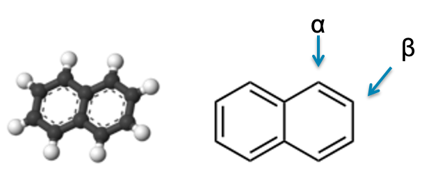
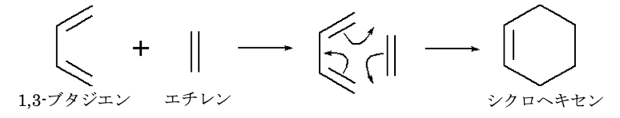
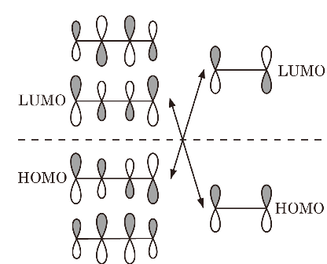

3. 量子化学計算の応用演習¶
3.1. 相互作用解析¶
量子化学計算(シミュレーション)の利点は、実在しない(実験室では合成・単離が不可能な)分子も取り扱うことができることである。 領域Aと領域Bから構成される系(AB)において、領域A、B間の相互作用エネルギーは以下の式によって求められる。
ここでは、キシレン異性体におけるメチル基の相互作用エネルギーを求めよう。 CH3-C6H5 を領域A、メチル基(CH3-)を領域Bとして全エネルギーを求めれば良い。
分子 |
E[AB] / a.u. |
E[A]] / a.u. |
E[B] / a.u. |
E int / kcal mol -1 |
|---|---|---|---|---|
o-xylene |
||||
m-xylene |
||||
p-xylene |
3.2. ナフタレンの反応予測¶
ナフタレン(naphthalene)に 求核試薬NH2-, 求電子試薬NO2+ を 反応させる(置換反応)ことを考えよう。 ナフタレンの対称性から、付加できる場所はα位(1位)とβ位(2位)だけとなる。
まず、ナフタレンの構造最適化計算を行い、α位(1位)とβ位(2位)炭素の原子電荷(Mulliken電荷)を求める。
分子 |
Mulliken電荷 |
|---|---|
1位炭素 |
|
2位炭素 |
また、分子軌道(HOMO、LUMO)と静電ポテンシャルを描いてみる。これらの結果から、naphthylamine、nitronaphthalene はそれぞれどの異性体が生成しやすいかを予想してみる。
次に、実際にnaphthylamine、nitronaphthalene の異性体の構造最適化計算を行い、どちらの異性体の全エネルギーが低いかを求めよう。
分子 |
全エネルギー / a.u. |
エネルギー差 / kcal mol -1 |
|---|---|---|
1-naphthylamine |
--- |
|
2-naphthylamine |
分子 |
全エネルギー / a.u. |
エネルギー差 / kcal mol -1 |
|---|---|---|
1-nitronaphthalene |
--- |
|
2-nitronaphthalene |
3.3. 遷移状態探索¶
ブタジエンとエチレンはDiels-Alder反応により、シクロヘキセンを与える。
この反応はブタジエンのHOMOとエチレンのLUMOの相互作用により6員環構造が形成される反応であることが知られている。
この反応経路を観察しよう。
まず反応物のブタジエンとエチレン、そして生成物のシクロヘキセンをモデリングする。
ブタジエンとエチレンから反応物の構造を作成する。
ブタジエンの構造を固定してエチレンの構造最適化をするとうまく出来る。
QST2法 (Saddle Calculation) により遷移状態を求める
それぞれの分子軌道を観察してみるとともに、 活性化エネルギーの実験値 27.5 kcal/mol-1 と計算で求めた活性化エネルギーを比較してみよう。